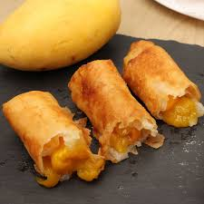

Back
Egyptian Toast Recipe

Description
A combination of ripe mangoes and yellow peaches that creates a sweet and tangy filling, perfectly complemented by the crispy, crunchy outer layer.
Ingridients
- 2 ripe mangoes, diced
- 4 large ripe yellow peaches, peeled and diced
- 1/4 cup white sugar
- 2 tablespoons cornstarch
- 2 tablespoons water
- 16 lumpia wrappers
- canola oil, for frying
Recipe
- In a large non-stick pan, combine mangoes, peaches and sugar. Stir well to combine then simmer over low heat until the fruit starts to break down, about 10 minutes.
- In a separate bowl, whisk together cornstarch and water until cornstarch is dissolved into a slurry.
- Add the cornstarch slurry in the pan with fruit. Bring a low boil and cook until thickened, about 2 to 3 minutes. Transfer the mixture to a bowl and let cool, about 10 minutes.
- Lay two lumpia wrappers on the work surface, slightly overlapping. Scoop about 2 tablespoons of peach mango mixture into the bottom thirds of the lumpia. Fold sides in while rolling until wrapper is rolled. Wet the end of the wrapper with water and seal. Repeat with remaining wrappers.
- Add about 4 inches of oil to a large heavy-bottomed pot. Heat oil to 350°F (176°C).
- Working in batches, carefully place the rolls into hot oil and fry until deep golden brown, about 3-4 minutes. Place on a paper towel lined sheet to drain excess oil then repeat with remaining rolls.